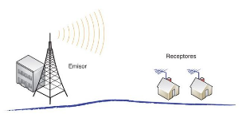

Ondas Radiales
Las ondas de radio, como parte del espectro electromagnético, han jugado un papel fundamental en el desarrollo de las redes y las comunicaciones, siendo una de las tecnologías más utilizadas para transmitir información a través del aire. Su capacidad para propagarse a grandes distancias, atravesar obstáculos y ser moduladas con información de diversa índole las convierte en una herramienta invaluable en este ámbito.
